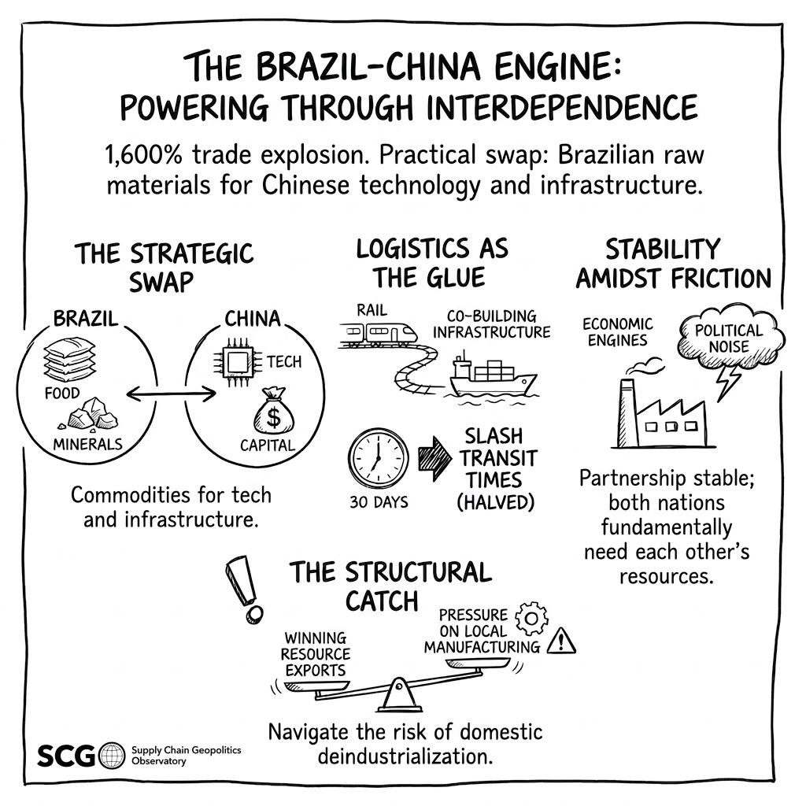

Publications & Media
Where our work travels.
Research moves through journals, books, public commentary and conversations with the people making decisions.
In the media
Interviews and commentary
U.S.–China tariffs and what they mean for healthcare costs
Os efeitos em cascata da COVID-19 nas cadeias produtivas
Miguel, P., & Biazzin, C.
The coronavirus pandemic and protein supply shortages
Peer-reviewed
Journal articles
Evaluating the Brazil-China trade relationship: Navigating economic disparities, divergent objectives, and strategic influence.
Latin American Policy, 17(2), e70056.
Snapshot and audio summary

Transition paths of Brazil from an agricultural economy to a regional powerhouse: A global supply chain perspective.
Sustainability, 16(7), 2872.
Populism pressure, public policies, and firm strategic choices: The case of Brazil.
Thunderbird International Business Review, 66(3), 251–268.
Socially responsible supply chain initiatives and their outcomes: A taxonomy of manufacturing companies.
Supply Chain Management: An International Journal, 28(1), 90–106.
Supply chain and operations strategies for problem-solving in Latin American countries: An introduction.
Journal of Operations and Supply Chain Management, 10(2), 1–5.
Responsiveness in the supply chain: A possible decision-driver for location of new subsidiaries?
Journal of Operations and Supply Chain Management, 6, 26–41.
Estratégia de operações internacionais: Evolução e tendências.
Revista de Administração da UNIMEP, 10, 1–27.
Books and reports
Chapters and applied research
Global supply chains and the rise of strategic buffer economies.
In T. Hoang (Ed.), Geopolitics, War, and the Strategic Repositioning of Supply Chains. IGI Global. Forthcoming.
Populism expectations and supplier diversity.
In Encyclopedia of New Populism and Responses in the 21st Century. Springer.
U.S. Foreign-Trade Zones: Operational strategies adopted by FTZ managers.
Research report, Northern Kentucky University.
The role of strategic sourcing on global supply chain competitiveness.
In Managing Operations Throughout Global Supply Chains. IGI Global.